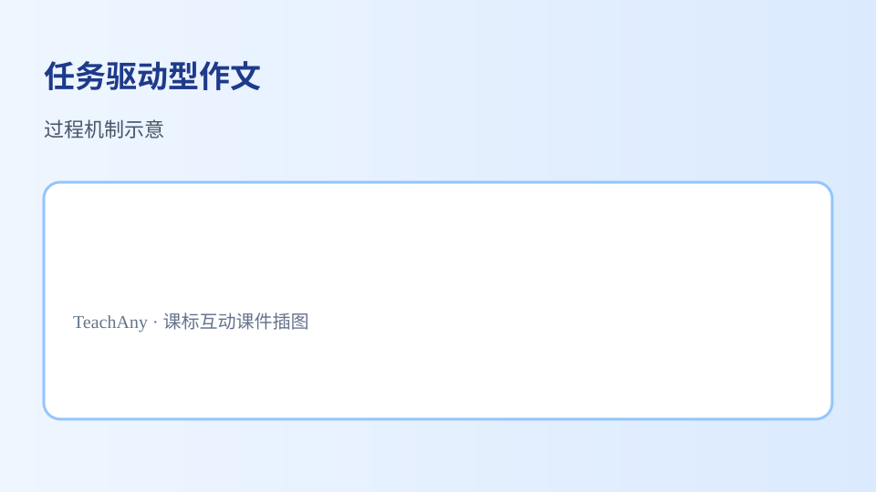

任务驱动型作文
学习任务群的设计着眼于培养语言文字运用基础能力，充分顾及问题导向、跨文化、自主合作、个性化、创造性等因素。
 任务驱动型作文：概念—方法—应用
任务驱动型作文：概念—方法—应用
- 能复述课标要点：学习任务群的设计着眼于培养语言文字运用基础能力，充分顾及问题导向、跨文化、自主合作、个性化、创造性等因素。
- 能运用所学方法分析任务驱动型作文相关典型问题
- 能在情境中正确应用任务驱动型作文的知识与技能
- 能识别并纠正关于任务驱动型作文的常见误区
学习「任务驱动型作文」时，第一步最应该做什么？
先选一个，错了正好暴露你的前概念，我们一起纠正。
任务驱动型作文是高中语文的重要内容。学习任务群的设计着眼于培养语言文字运用基础能力，充分顾及问题导向、跨文化、自主合作、个性化、创造性等因素。
语文课程还应当适应当代社会的发展需要，为培养创新人才发挥重要作用。要引导学生在语言文字运用的过程中发现问题，培养探究意识和发现问题的敏感性，探求解决问题和语言表达的创新路径。
任务驱动型作文核心概念示意学习路径：明确概念→掌握方法→情境练习→反思纠错。
学习任务群以自主、合作、探究性学习为主要学习方式，凸显学生学习语文的根本途径。这些学习任务群追求语言、知识、技能和思想情感、文化修养等多方面、多层次目标发展的综合效应。

任务驱动型作文方法与应用把卡片拖到核心概念 / 方法技能 / 应用情境 / 常见误区。
📌 理解任务驱动型作文的基本含义
🔍 用证据分析任务驱动型作文
🌍 在真实情境中运用任务驱动型作文
⚠️ 只背结论不联系材料
拖完 4 项后自动判分。
解释题：请结合课标要点，用2–3句话解释你如何理解「任务驱动型作文」，并举一个应用例子。
提示：先写核心概念，再写方法或步骤，最后举一个具体情境例子。
拓展题：关于任务驱动型作文，你曾犯过什么错误？后来怎样改正？
关于任务驱动型作文的学习，哪种做法最科学？
选一个并查看反馈。
2掌握了学习任务驱动型作文的基本路径：概念—方法—应用。
迁移任务：找一道与「任务驱动型作文」相关的练习题或生活情境，用本课方法完整解答一遍。
什么是任务驱动型作文
任务驱动型作文是一种以具体任务为导向的写作形式，要求学生根据给定的情境和要求完成写作。与传统的命题作文不同，它更注重解决实际问题或完成特定目标。例如，学校要举办环保主题活动，老师布置任务：'请你以学生会成员身份，写一封倡议书，号召同学们减少使用一次性塑料制品。'这个任务明确了作者身份（学生会成员）、文体（倡议书）、写作目的（号召环保行动）。再比如，社区要征集垃圾分类宣传方案，任务可能是'设计一份图文并茂的宣传单页，向居民解释四类垃圾的区别'。这类写作强调实用性和针对性，需要学生在理解任务要求的基础上，组织语言、选择恰当的表达方式。
任务驱动型作文的特点
任务驱动型作文具有三个鲜明特点：一是情境真实性，任务往往模拟现实生活中的场景。如'假设你是博物馆讲解员，为小学生撰写一段关于青铜器的解说词'，这个任务还原了真实职业场景。二是目标明确性，写作要求具体可操作。例如'给校长写一封建议信，提出三条改善食堂服务的措施，每条措施需说明理由和实施步骤'，直接规定了内容结构。三是读者针对性，需要根据受众调整语言风格。比如同样是介绍手机功能，写给老年人的说明书要用大字、简单词汇；写给年轻人的测评文章则可以加入网络流行语。这些特点要求学生跳出'为写而写'的模式，培养真实语境下的表达能力。
审题三要素
精准审题需要把握三个核心要素：首先是角色定位，要明确'我是谁'。如任务要求'以班长的身份制定班级读书计划'，就不能用老师或家长的口吻。其次是任务类型，区分是写倡议书、调查报告还是设计方案。例如'分析校园霸凌现象的原因并提出对策'属于分析建议类，而'设计校园反霸凌宣传周活动流程'则属于策划执行类。最后是具体要求，包括字数限制、格式规范等细节。曾有学生完成精彩的环保提案却因忽略'不少于800字'的要求而扣分。实际案例中，某市中学生作文比赛题目为'假如你是市长助理，就缓解早晚高峰拥堵写一份备忘录'，获奖作品准确把握了政府公文的简洁风格和务实建议的特点。
结构搭建方法
推荐使用'任务-分析-方案'三段式结构：开篇明确任务，如'本次需要解决教室空调使用效率低的问题'；中间分析现状，可以用数据说话——'调查显示75%的同学不会正确设置温度，导致每月电费超支200元'；最后提出解决方案，要具体可行，像'建议将温度统一设定为26℃，并张贴节能操作指南'。另一种是'背景-问题-措施-效果'四步法，适用于较复杂任务。例如社区宠物管理方案可先描述遛狗不牵绳现象，再分析监管难点，接着提出建立宠物档案、划定活动区等措施，最后预测实施效果。避免平铺直叙，要体现解决问题的逻辑链条。
语言表达技巧
根据任务性质选择得体的语言风格：行政类任务需正式规范，如提案中写'建议教务处统筹安排'而非'我觉得学校应该'；宣传类任务可以生动形象，如环保标语用'不要让地球的最后一滴水是我们的眼泪'；说明类任务则要准确简明，像实验报告写'将溶液加热至80℃保持3分钟'。特别注意特定文体的格式要求，倡议书要有称呼、正文、署名日期；调查报告需包含研究方法、数据图表。某次模拟考试中，任务要求'用对话形式讲解防疫知识'，高分作文模拟了医生与患者的自然问答，而低分作文仍采用议论文体，这就是语言形式与任务要求错位的典型例子。
素材运用策略
有效运用素材要做到'三贴合'：贴合任务场景，如写社区健身器材维护方案时，引用居民访谈记录比泛谈健康理念更有说服力；贴合读者需求，给小朋友讲解航天知识可以用'宇宙飞船像积木一样组装'的比喻；贴合时代特征，解决共享单车乱停放问题应提及最新的电子围栏技术。收集素材的途径包括：观察记录（如校园不文明行为统计）、调查问卷（食堂满意度调查）、文献查阅（垃圾分类政策文件）。案例示范：某学生撰写'改善校门口交通拥堵'提案时，连续三天拍摄不同时段路况照片，并采访了20位家长，最终提出的错峰放学方案被学校采纳。
常见文体示例
重点掌握五种高频文体：一是建议类，如'关于设立校园旧书回收站的提议'，需包含现状分析、建议内容、预期效益；二是解说类，如'科技节机器人展区讲解稿'，要求通俗易懂、重点突出；三是策划类，如'班级元旦联欢会活动方案'，需明确时间、地点、流程分工；四是书信类，如'致环卫工人的感谢信'，要注意称谓、祝福语等格式；五是辩论类，如'网络实名制利大于弊的立论陈词'，需要论点、论据、论证完整。每种文体都有标志性语言特征，比如方案中常用'第一阶段...第二步...'等序数词，而感谢信则多用'衷心感谢''铭记在心'等情感化表达。
修改提升要点
修改时聚焦四个维度：任务契合度——检查是否所有要求都得到回应，如任务指明要'图表辅助说明'就不能只有文字；逻辑严密性——看解决方案是否针对问题根源，如分析自习纪律差仅提'加强巡查'就流于表面，应深入剖析原因；表达准确性——避免模糊表述，'多数同学'应改为'68%的受访学生'；格式完整性——核对书信的署名、方案的落款日期等细节。实践案例：某班修改'食堂改革提案'时，将最初的'饭菜不好吃'这类情绪化表述，改为'午餐剩饭率达40%'的事实陈述，并增加对比其他学校菜品的照片证据，使建议更具说服力。
📋 课前诊断
1. 你曾经写过哪些类型的实用文体？2. 如果让你设计班级文化墙，你会考虑哪些要素？
✅ 达标检测
1. 请指出倡议书与调查报告的三点区别。2. 根据'为新生设计图书馆使用指南'的任务要求，列出至少四个必备内容项。
💡 错因诊断
常见错因包括：误区一，忽视任务中的隐形要求，如未注意'请用对话体'等特殊指示；误区二，角色代入不充分，写市长讲话却用学生口吻；诊断方法是通过角色扮演来检验语言是否得体。另一个误区是重形式轻内容，花哨排版却无实质建议，需建立'内容优先于形式'的写作意识。
🚀 迁移挑战
迁移挑战：分析你所在社区的某个实际问题（如垃圾分类、宠物管理、停车难等），设计一份包含现状调查、问题分析、解决方案的完整提案，要求使用真实数据支撑观点，并考虑不同年龄层居民的接受度。
🗺️ 知识图谱：任务驱动型作文 — 任务驱动型作文